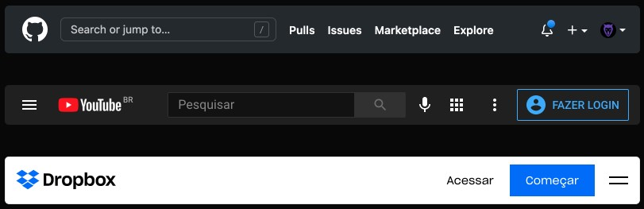
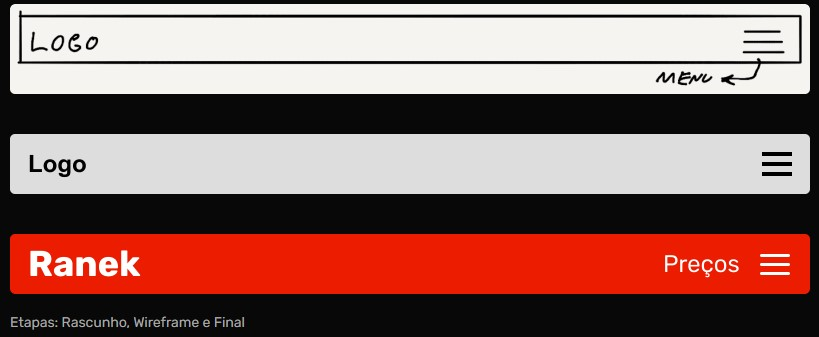
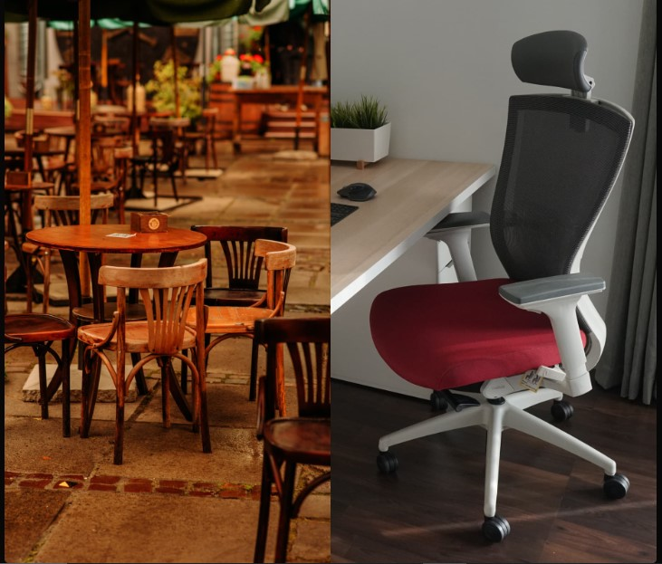
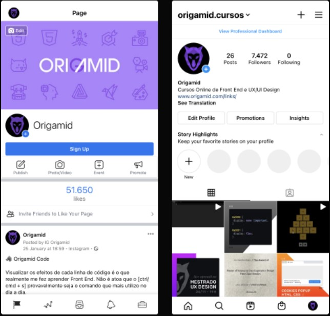

Início.
Os mínimos detalhes é que fazem a grande diferença!
Design
Design é Projeto
Plano:
- Limites (sim/não = objetivos) e Pesquisa (contexto)
Execução:
- Desenho (protótipo/entrega) e Testes (iteração/melhorias)
Alexandre Wollner: https://vimeo.com/13192992
Plano
Por mais simples que um menu se pareça, existe muita pesquisa e planejamento por trás da criação do mesmo.

botão com cor azul ao redor é um padrão de login ou inscrever-se, ou algo semelhante.
Execução
A execução do projeto é feita em etapas, cada etapa prioriza uma parte do projeto. Testar o artefato final é essencial para garantirmos uma boa experiência (ux).

Design é Intenção(para cada decisão)
Escolhas são feitas para alcançamos os objetivos de maneira eficiente.
Obs: os mínimos detalhes é que fazer a grande diferença

Análise
Podemos analisar/especular os motivos por trás de cada escolha.

Demonstração de prática

• O menu é localizado na parte inferior, possui 5 itens e utiliza ícones em linhas.
• Não são utilizadas etiquetas (label) próximo aos ícones.
• Os botões são retangulares e arredondados nas pontas.
• A foto de perfil é localizada dentro de um círculo.
• O texto utiliza preto e tons de cinza em um fundo branco.
• O azul é utilizado para chamar atenção (contraste).